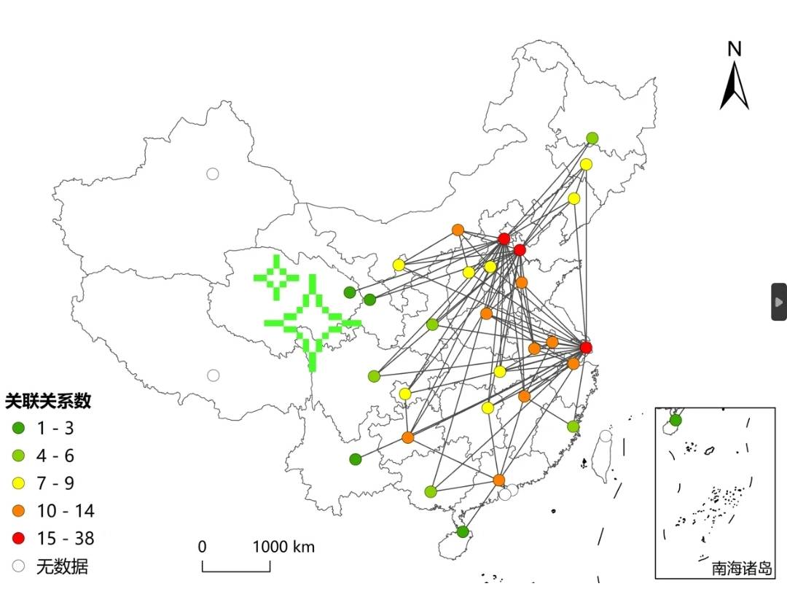
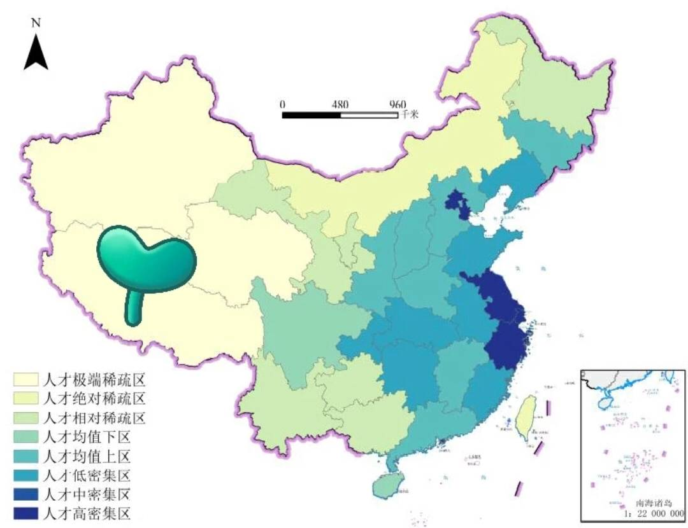

未来发展方向
未来发展方向
跨学科研究：地学将与其他学科的交叉融合更加紧密，如地球化学与生命科学的结合，地球物理学与计算机科学的结合。跨学科研究将促进对地球系统复杂性和相互作用的深入理解。
多源数据融合：随着技术的进步和数据获取手段的多样化，地学将面临大量多源数据的处理和分析。发展更有效的数据融合方法和技术，将不同类型的数据整合起来，以揭示地球系统的更全面和准确的信息。
空间大数据和人工智能：地学将积极应用空间大数据和人工智能技术。利用卫星观测数据、遥感图像和传感器网络等获取的大规模数据，结合机器学习和深度学习算法，能够快速处理和分析地学数据，并从中提取隐含的知识和规律。

气候变化和可持续发展：面对全球气候变化和可持续发展的挑战，地学将继续在这个领域发挥重要作用。通过深入研究气候系统和地球生态系统的相互作用，为制定气候变化适应和减缓策略提供科学依据。
地球资源管理：随着人口增长和经济发展，对地球资源的需求不断增加。地学将在可持续地球资源管理方面发挥重要作用，通过地质勘探、资源评估和环境影响评价等研究，促进合理开发和利用地球的矿产、水资源和能源。
地学教育和科普：加强地学教育和科普工作，提高公众对地学的认识和理解，培养更多的地学专业人才。通过科学传播和教育活动，让更多人了解地球的奇妙之处，并认识到人类与地球的相互关系。